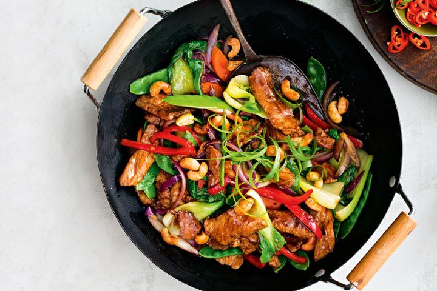
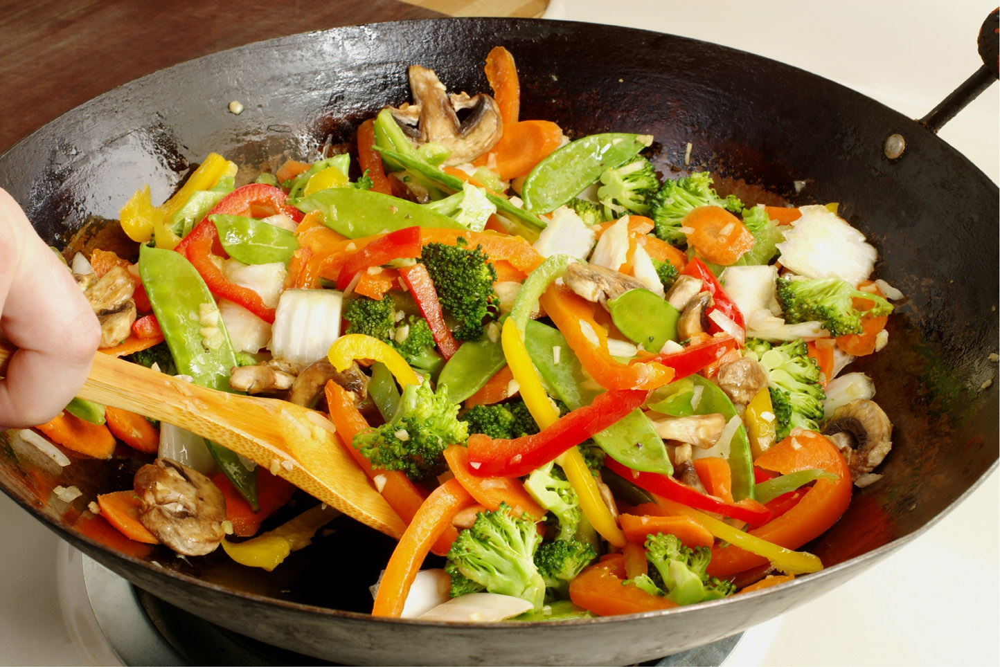
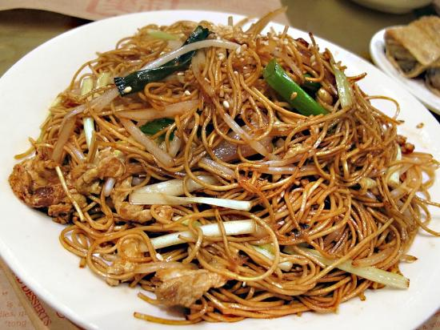

Chicken noodle stir-fry
Ingredients
- ½ a bunch of fresh coriander
- 3 cloves of garlic
- 5 cm piece of ginger
- 1 bunch of spring onions
- 1 fresh red chilli
- 1 lime
- 2 carrots
- 1 head of broccoli
- 2 skinless higher-welfare chicken breasts
- 250g medium free-range egg noodles
- 50g unsalted cashew nuts
- vegetable oil
- freshly ground black pepper
- 1-2 tablespoons low-salt soy sauce
- 1 tablespoon fish sauce
Preview



As you can see in the above images, it shows the complete and delicious stir fry dish in all of its glory looking mighty delicious and ready to eat!
Directions
- Pick the coriander leaves and finely slice the stalks, then keep aside for later. Peel and finely slice the garlic, then peel and matchstick the ginger.
- Trim and finely slice the spring onions, deseed and finely slice the chilli and cut the lime into wedges. Trim, peel and thinly slice the carrots at an angle.
- Cut the broccoli into small florets, then finely shred the stalk, discarding any gnarly bits. Cut the chicken into 1cm strips.
- Cook the noodles according to packet instructions, then drain and refresh under cold water. Drain again, toss in a little oil and put to one side. Lightly toast the cashew nuts in a non-stick frying pan until golden, then tip onto a plate to cool.
- Heat 1 tablespoon of vegetable oil in a large frying pan or wok. Season the chicken with a pinch of pepper, then add to the pan and stir-fry for 2 to 3 minutes, or until golden. Add the coriander stalks, garlic and ginger and cook for a further minute.
- Add the spring onions, carrots and broccoli and stir-fry for a further 2 minutes, then add the cooked noodles. Keep stir-frying until the noodles are warm and the chicken is cooked through. Stir through the soy and fish sauces , then remove from the heat.
- Divide between bowls, sprinkle over the nuts, sliced chilli and the reserved coriander leaves, then serve with the lime wedges for squeezing over.
What I learnt
- How to use lists better.
- How to put in images.
- How to change bullets to squares.
- How to put emphasis on certain words.